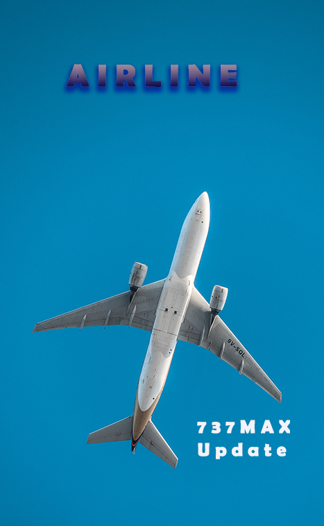
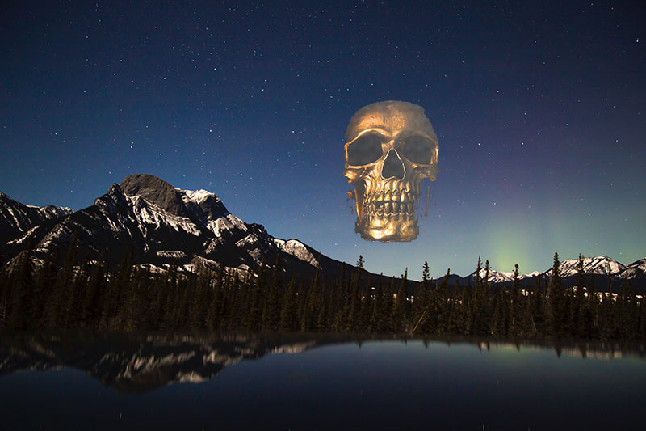
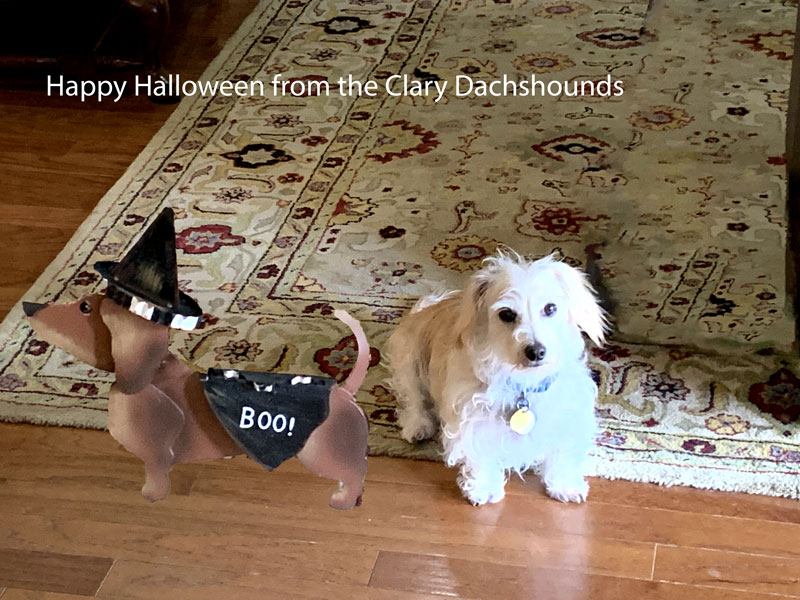
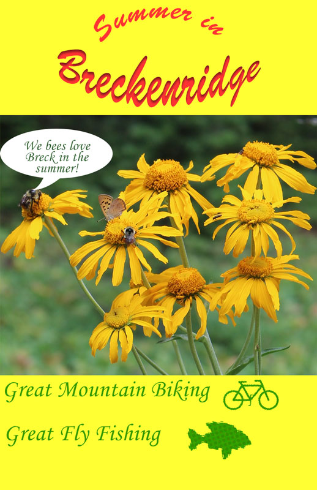

Introduction
I’m a senior citizen without a creating bone in my body. I owned a small environmental & computer consulting
company for 32 years. I “farmed-out” most creative stuff to one of my associates or a contractor. Photoshop
Elements was my only graphics experience. Thus, I was somewhat apprehensive about taking this class.
My initial task was getting use to going back to college. (I finished my master’s degree in 1973.) I
remember fretting about the first lab assignment (create an original web page). After long hours working on
this assignment and encouragement from D. Hsu, I completed the lab and became confident that I could successfully complete the class. I was looking forward to learning about the “real”
Photoshop.
As you will see in the following lab examples, I’m certainly not creative. Thanks to the exercises in the
textbook, I was able to learn how to do ‘neat’ things using Photoshop cc. I especially enjoyed learning how
to use a mask to cover part of one image and move to another image. I could now “photoshop” a
picture!
I’m using this webpage as one of the webpages for the Beginning Web Programming course semester project. My
web-editor was Visual Studio Code. I did not use any prebuild layouts. This webpage responds to different
screen sizes and may be viewed from a small mobile screen to a full desktop screen. I like the new “dark
mode” theme and selected it for this website.
Lab 2B
I obtained this photograph from Photo by Kym Ellis on Unsplash.com. I
selected a picture of a tree blooming in the spring. (I was trying to forget our late summer heat!)
I obtained the photo from Photo by Anthony DELANOIX on Unsplash. I wanted to remove some of the background
flowers from the top of the picture. First, I used the lasso tool to define the area to be modified. Next, I
used Edit>fill. I selected the color adaption option. I had to repeat this process two more times to remove
all background flowers. I did not think that I had to sharpen the image.
I derived a sense of satisfaction upon completed this lab. I look forward to applying this new skill to some
of my personal photographs that would be “perfect” after removing one or more unwanted objects.
Lab 3A

I was excited about this lab. I would get to create my own magazine cover. My dad was an airline pilot,
so I want to create an airline magazine.
Found an interesting picture, “airline.jpg”, satisfying
the magazine cover requirements on Unsplash.com.
“airline.jpg”. Using Photoshop I performed
the following steps:
1. Reduced its pixel density (wanted to keep as much of the image as possible, so minimized cropping).
2. Saved the picture as a .psd file.
3. Added “Airline” to the top center using the textr tool.
4. Rasterized the title layer.
5. Applied a gradient to the title.
6. Applied three layer styles - (1) Drop Shadow, (2) Satin & (3) Inner Shadow.
Lab 3B

Another fun lab. The season was changing from summer to fall & Halloween. So I went searching for a
“scary” picture. I found a great picture of a gold skull on my favorite picture website Unsplash.com. Also downloaded a night mountain picture
for the background. Started Photoshop and preformed the following steps:
1. Reduced pixel density & size to get bellow the 800px limit & same size. Saved & closed the gold skull.
2. Drag & dropped the gold skull onto the night mountain. Now have two layers, but the gold skull contains
a background.
3. Used the rectangle then magic wand outlined the skull. Selected the skull & used layer>new>layer via
copy to get the skull without the background in a separate layer.
4. Right clicked on the skull layer without background, selected blend then bevel & emboss.
5. Played around with the non-opacity parameters until it was looking good.
6. De-selected the layer with the background so it would not be part of the photo.
7. Exported to a PNG file and posted.
Lab 4A

This is one of my favorites. As I described in the introduction, I was now “photoshopping” pictures just
like the pros. Great fun for an old guy.
I wanted to include our four-legged “kid” – a dachshund names Shortstop. My wife had purchased a neat
Halloween dachshund at a craft fair. So, I thought a picture with both dachshunds would be a great
project. The following steps describe that process:
1. Took a picture of Shortstop & a picture of the craft dachshund using my iPhone.
2. Two original files are IMG_0726.heic & IMG_0727.heic. Encountered a problem – PS does not open .heic
files on windows. So – had to convert using https://heic.imobie.com/heic-to-jpg/ .
3. Opened IMG_0726.jpg in Photoshop & saved as Clarylab4a.psd.
4. Added IMG_0727 as a layer by dragging it onto the Clarylab4a.psd file. Renamed the layer as Boo.
5. With both layers visible and the Boo layer is selected, Chose Select > Select and Mask.
6. In the Options bar, clicked the Select Subject button. Learned you must hold the button for a few
seconds until PS starts to make the selection.
7. Now to refine the mask. Used the quick select tool & brush tools in both + & - modes while in the
overlay v (red) view. Found the black view useful in finding extraneous non-masked areas. Learned I did
not make it easy by having the “boo” image on the rug also. Auto select missed things, as the
delineations are not clear. Should have used a white background for the “boo” photo. But this is a
lesson. Selected OK to save all this hard work. Kept the output to “new layer with Layer Mask”. (What
can it hurt to save intermediate layers if you don’t make them visible?) Made several interactions.
8. Clicked the View menu in the View Mode section and chose On Layers. In the Global Refinements
section, moved the sliders to create a smooth, unfeathered edge along the face. Used the “recommended
settings of moved the Smooth slider to 5 to create a smoother outline, Contrast to 20% to make the
transitions along the selection border more abrupt, and Shift Edge to −15% to move the selection border
inward and help remove unwanted background colors from selection edges.
9. In the output menu selected I reduced the Amount until the to 16%.
10. Selected OK to produce the final layer.
11. While not part of the lesson, I used the Content-Aware Fill tool to remove most of the table legs. I
did not include the details here, as it isn’t part of the lesson. I did copy the background layer to
background w/o table & applied the removal from it. So – to see table removal, make background invisible
& Background w/o table visible. I realize this isn’t something one should normally do – not to select
background. But for the purposes of this exercise, could just ignore “background w/o table”. Also added
a text layer.
Lab 4B
I was excited about this lab. Correcting photographs is a skill that I can use on many photographs I have
in my picture archive. So off I went as described below.
1. Started with a JPG file of the Riverwalk center in Breckenridge, CO. Saved as a .psd file. Applied
these fixes:
2. Levels – lighten shadows – helps get the shadows out of the people in the foreground.
3. Brightness/contrast – started with auto. Couldn’t improve – so left at the auto levels (-8, 11).
4. Curves – look at the defaults – couldn’t find any better than auto. So – left at auto.
5. Exposure – couldn’t find any enhancement, so disabled the layer.
6. Hugh saturation – selected the “increase saturation more”.
7. Photo filter – selected “cooling filter (LBB) to remove some of the green. Now the concrete looks
correct.
8. While not part of the lesson, I used the Content-Aware Fill tool to remove most of the partial lamp &
restroom sign. I did not include the details here, as it isn’t part of the lesson.
Lab 5

I experienced a little “panic” upon reading the lab requirements for the first time. I must create a
poster. At my company, I would have had a contractor create the poster. But, I’m back in school to learn,
so off I went.
I have a great photograph I took in Breckenridge, CO a few year ago and thought it would make a good
poster. It is a landscape picture, so it would not completely cover the poster. (I did not want to convert
to portrait by cropping as it would destroy the neat elements.)
Started Photoshop and performed the following steps:
1. Started with a new PS file. Set w=11”, h=17” , 72 px/in, background color ffff33. Saved it as the
project file clarylab5.psd. This is now my background. Duplicated the background layer so I would have
something to work with.
2. Dragged & dropped my photograph “flower_bee_butterfly.jpg”. This created another layer. For now, left
it in the middle of the poster.
3. Title - Text following a path, warp text & text effect:
a. selected the ellipse tool. Created an ellipse 322px x 200px. Using the horz text tool, typed “Summer
in” on the top of the ellipse.
b. Selected the Horizontal type tool. Set font size to 100. Typed “Breckenridge”.
c. Renamed the two text layers.
d. Move a “guide” line from the left to the center of the poster. Used the move tool to center the two
text layers.
e. Warped the “Breckenridge” layer. Right-clicked the layer, selected “Arc Lower”. Left the other options
as is – blend +50 & 0 distortion. Selected okay.
f. Selected the Breckenridge layer. Right click layer & select ‘blending options”. Select “inner shadow”.
Select OK.
4. Text on the bottom
a. Selected the horizontal text tool. Selected 60 pt & Monotype Corvsive font & nice green 339900 color.
Renamed layer.
b. Deslected layers.
c. Added another horizontal text layer. “Great Fly Fishing”. Renamed layer. (Note – not concerned about
placement at this point.)
d. Using the move tool, place the two text layers to the left of the poster.
5. Add shapes on bottom
a. Select custom shape tool.
b. In the shape box, selected the gear icon & selected “All”.
c. Select the bike shape & place on the bottom of the poster. Renamed layer to “bike”.
d. Select> deselect all layers so I can create another layer.
e. In the shape box, selected the gear icon & selected “Animals”.
f. Select the fish shape & place on the bottom of the poster. Renamed layer to “fish”.
g. Using the path select tool, moved the two shape layers to the end of the corresponding text boxes.
h. Changed their color of the two shapes. Choose the Direct Selection tool from the tool bar. Now at the
command bar at the top, change the fill color to the same color that is used for the text (339900). (I
used the “recent selected colors”.
6. Apply 3 filters to the shapes
a. Right click the the fish layer. & convert to smart object.
b. From main menu select filter>ripple. Select -273% & small size
c. Select filter>color halftone. Select 7% opacity
d. Right click the bike layer. & convert to smart object.
e. Select filter>diffuse. Select darken only
7. Finalize
a. I probably should delete the unused layers – background copy & title ellipse. But – for this lab left
them.